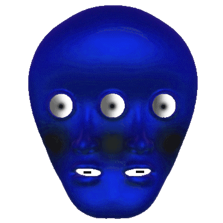

Digital Colonialism
Chapter 1
A cat singing song
Chapter 2
Another interesting sound
Chapter 3
The Signal and the Silence
Chapter 4
A New Awakening
Your browser does not support the audio element.
Title
Text
 Chapter 1
Chapter 2
Chapter 3
Chapter 4
Chapter 1
Chapter 2
Chapter 3
Chapter 4